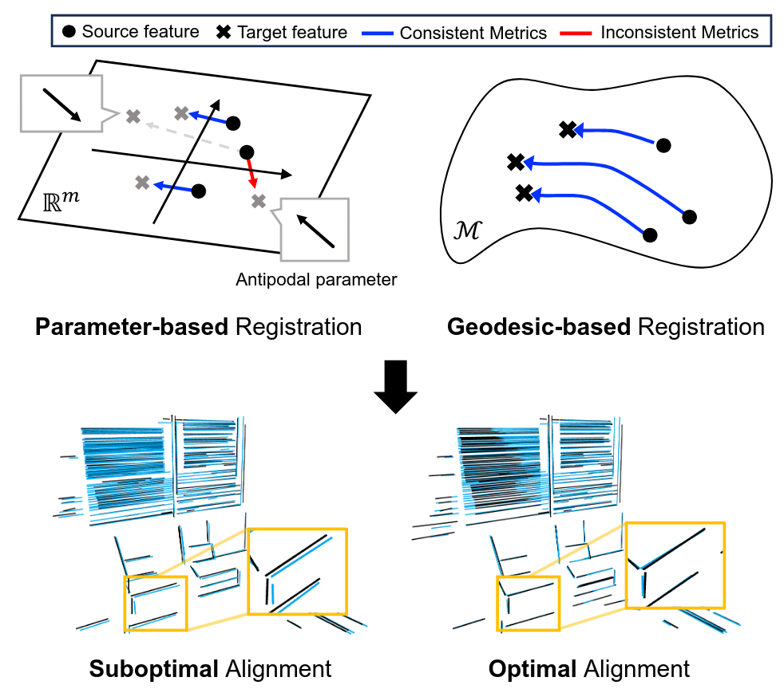

|
I am a Ph.D. student in SSI lab and Computational Autonomy and Robotics Laboratory of Michigan Robotics, co-advised by Prof. Yulun Tian, and Prof. Maani Ghaffari. Prior to my Ph.D. program, I completed my Bachelor's and Master's degree in SNU, advised by Prof. Ayoung Kim of RPM Robotics Lab. My research interets are SLAM, manifold and optimization. I am particularly working on scalable scene representation using geometric primitives and relevant downstream algorithms. Email / Google Scholar / Github / CV |
{kind=link}
|  |
Registration beyond Points: General Affine Subspace Alignment via Geodesic Distance on Grassmann Manifold
Jaeho Shin, Hyeonjae Gil Junwoo Jang, Maani Ghaffari, Ayoung Kim, ICCV, 2025 (highlight paper) code / arXiv The first registration algorithm for geometric primitives with geodesic distance on Grassmann manifold. |
|
Pelical: Targetless extrinsic calibration via penetrating lines for rgb-d cameras with limited co-visibility
Jaeho Shin, Seungsang Yun, Ayoung Kim, ICRA, 2024 code / arXiv Online extrinsic calibration algorithm using 3D lines for RGB-D cameras regardless of overlapped view area. |
|
|
Infrared Visual Inertial Odometry via Gaussian Mixture Model Approximation of Thermal Image Histogram
Jaeho Shin, Myung-Hwan Jeon, Ayoung Kim, The Journal of Korea Robotics Society, 2023 arXiv Infrared visual inertial odometry algorithm with adaptive 8-bit conversion of infrared images. |
|

|
Unbiased Estimator for Distorted Conics in Camera Calibration
Chaehyeon Song, Jaeho Shin, Myung-Hwan Jeon, Jongwoo Lim, Ayoung Kim, CVPR, 2024 (highlight paper) video / code / arXiv The first analytic solution describing projected conic features under polynomial distortion |
|
|